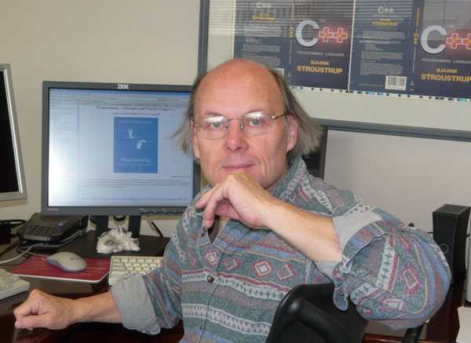

<div class="profile hide"><div>
  <div class="source">
C++ (1979)
  </div>
  <div class="detail">
    
    <div class="search"><a href="http://www.google.com/cse?cx=partner-pub-6997921015773263:4467526896&ie=UTF-8&q=Bjarne Stroustrup" target="_blank"></a> | <a href="http://en.wikipedia.org/wiki/Bjarne_Stroustrup" target="_blank">wiki</a></div>
    <div class="name"><a href="http://www2.research.att.com/~bs/" target="_blank">Bjarne Stroustrup</a></div>
    <div class="info"> (Danish pronunciation: [<span class="IPA">ˈbjɑːnə ˈsdʁʌʊ̯ˀsdʁɔb</span>]); born December 30, 1950 in Århus, Denmark) is a Danish computer scientist, most notable for the creation and the development of the widely used C++ programming language.
    <p><b><a href="http://en.wikipedia.org/wiki/C%2B%2B" target="_blank">C++</a></b> (pronounced "cee plus plus") is a statically typed, free-form, multi-paradigm, compiled, general-purpose programming language. It is regarded as an intermediate-level language, as it comprises a combination of both high-level and low-level language features. It was developed by Bjarne Stroustrup starting in 1979 at Bell Labs as an enhancement to the C language. Originally named C with Classes, the language was later renamed C++ in 1983.</p>
    </div>
  </div>
  <div class="photo">
    
  </div>
</div></div>